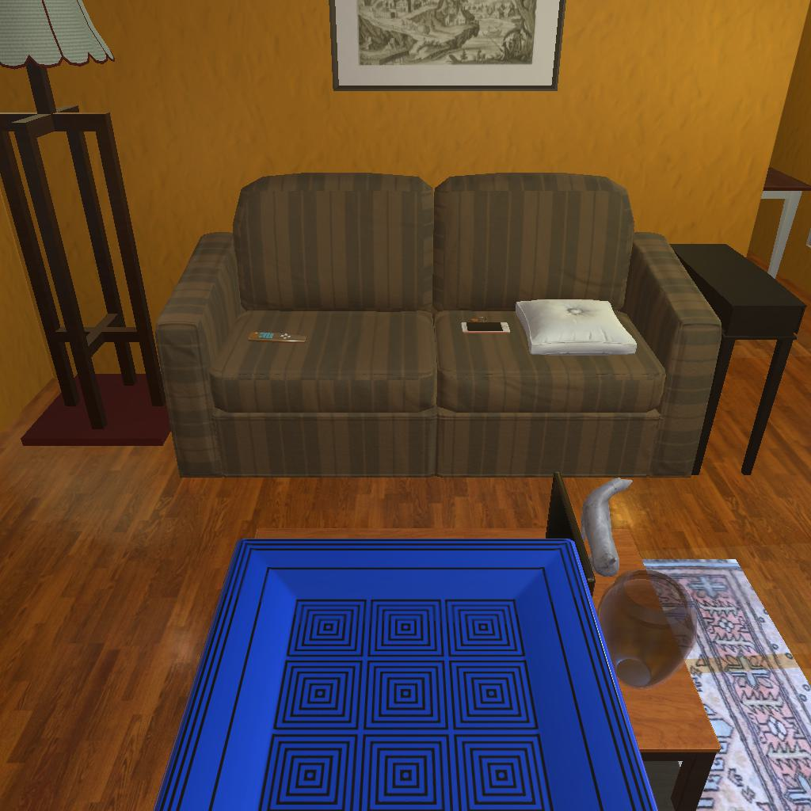

---------------------------------------------------------task: 3---------------------------------------------------------
--------------------------------------------------------------------------------------------------------------------------------------------------------------------
--------------------------------------------------------------------------------------------------------------------------------------------------------------------
Step:--------------------------------------------------------------------------15-------------------------------------------------------------------------------
----------------------------------------
VLM Prompt:
Image1:
Image2:
Image3:
**Instruction**
1. Analyze the provided images to identify all visible household objects and compare the difference between images (e.h. whether the object is opened or not and taken on hand or not), focusing on those relevant to the task description "examine the plate with the floorlamp."
2. Use the analysis of images and the task hint "The agent must find an object of the desired type, locate and turn on a light source with the desired object in-hand." to answer the question: what is the most reasonable action in the choices for the task description "examine the plate with the floorlamp"?
3. Decide and write the answer using the template: The answer is: (i): , where i is the real number. If there is no desired object in images, search every place based on **Initial Observation** to find the object. And if no one is exactly correct, choose a similar answer.
**Initial Observation**
You are in the middle of a room. Looking quickly around you, you can see armchair (1), garbagecan (1), tvstand (1), shelf (1-5), sofa (1), coffeetable (1), sidetable (1-2), drawer (1)
**Answer Choices**
(1): go to armchair 1
(2): go to garbagecan 1
(3): go to tvstand 1
(4): go to shelf 1
(5): go to shelf 2
(6): go to sofa 1
(7): go to sidetable 1
(8): go to sidetable 2
(9): go to drawer 1
(10): go to shelf 3
(11): go to shelf 4
(12): go to shelf 5
(13): use floorlamp 1
(14): examine plate 1
(15): examine coffeetable 1
**Answer**
Let's think step by step by following the instructions.
----------------------------------------
----------------------------------------
Original Response:
Firstly, we need to identify all visible household objects in the images provided. We can see a floorlamp next to the sofa, a sofa with some objects on it, a sidetable with an object, a coffeetable, and a shelf with no visible objects. There seems to be no plate visible in any of the images.
Comparing the differences between the images, we can see that they are almost identical, with no noticeable changes in the state of any objects (e.g., nothing is opened or taken in hand).
Considering the task description "examine the plate with the floorlamp" and the task hint, we need to find a plate and then turn on a light source with the plate in-hand. Since no plate is visible in the images, we must search every place based on the Initial Observation to find the object. Among the answer choices, none directly mentions finding or examining a plate. However, we can infer that the plate might be located in places where objects are usually kept, such as shelves, sidetables, or drawers.
The most reasonable action would be to search the areas where a plate might be, which leads us to the answer choice related to examining the sidetables or shelves. Since "examine plate 1" is listed as an option but we have not yet located the plate, we should go to potential locations where a plate could be found. Therefore, the answer is not to directly examine the plate but to search for it first.
The answer is: (4): go to shelf 1. If the plate is not there, continue searching the other shelves, sidetables, or drawers as per the Initial Observation until the plate is found. Then, proceed with examining the plate with the floorlamp turned on.
----------------------------------------
----------------------------------------
>>> Refine Original VLM Response and Get Pure Action: go to shelf 1
----------------------------------------
-----------------------------------------------------------------
Running time: 28.647136688232422 seconds
Total Money: 1.39625
-----------------------------------------------------------------
-----------------------------------------------------------------
Text Observation:You arrive at loc 3. On the shelf 1, you see a television 1, a statue 2, and a creditcard 1.
-----------------------------------------------------------------
UNSUCCEED